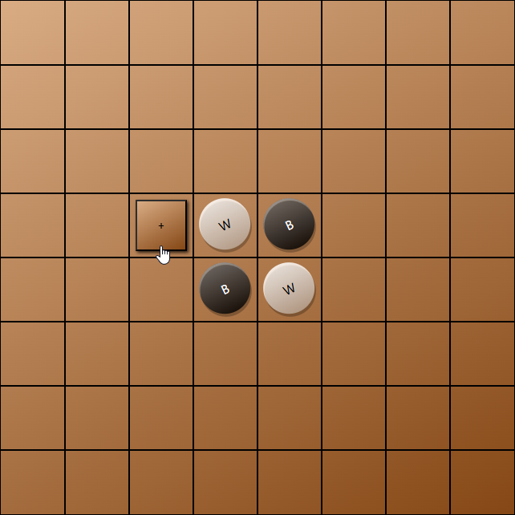

-
Chess

The only winning move may be not to play, but where's the fun in that? Play this timeless classic with a friend correspondance-style, or test your skills against my basic computer opponent!
Play Chess -
Minesweeper
Relive whittling away the hours on your grandmother's Windows 97 machine with a game of Minesweeper! This game supports minefields of all sizes and difficulties - your degree of peril is up to you. Happy digging!
Play Minesweeper -
Sudoku
Need to waste an hour at the airport? Look no further, this Sudoku player has you covered! Customize the appearance of the grid exactly to your liking and get ready for some head-scratchers!
Play Sudoku -
Reversi
Bored of checkers? Try Othello, checkers cooler younger sibling! Play against a greedy bot, in-person against a
Play Reversifriend (enemy?) , or online!